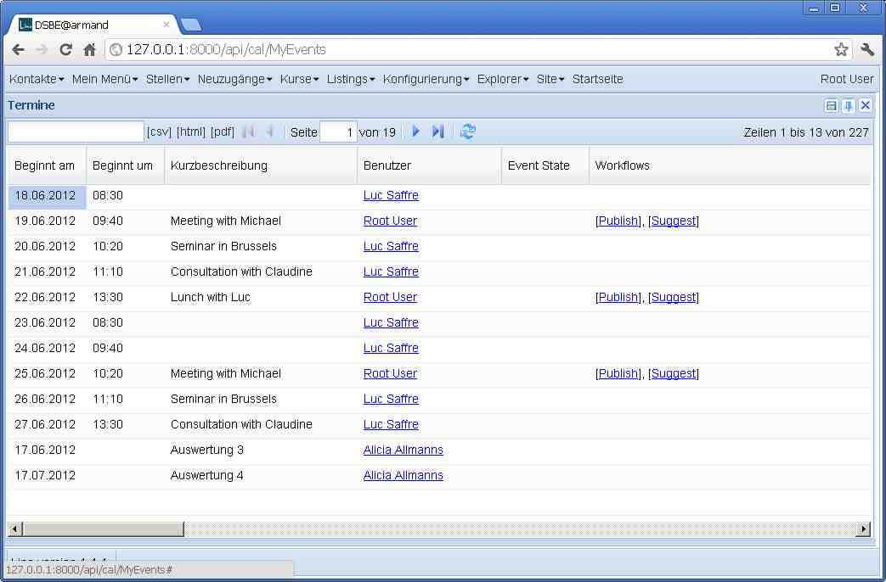

20120618¶
Bua, das mit den Workflows ist komplexer (und interessanter) als ich Freitag gedacht hatte. Aber jetzt scheint das Wichtigste zu stehen. Danke an Gerd, Gaëtan, Joël und Marc für eure beharrliche Geduld. Kleiner Screenshot als Andenken an den großen Moment:
{kind=link}
Jede Tabelle kann jetzt ein Attribut
workflow_state_field
setzen. Dieses Attribute enthält den Namen des Feldes,
das den Zustand eines Objektes in dieser Tabelle speichert,
der die Workflows regiert.
Solche Tabellen haben dann ein virtuelles Feld
workflow_buttons
(die Kolonne “Workflows” im Screenshot oben).
Die Workflow-Regeln kann man einerseits
programmatisch im Anwendungs-Code definieren,
indem man die neuen Aktionsparameter
required_states
und optional
owned_only
setzt (letztere wird ignoriert, wenn nicht auch
workflow_owner_field
gesetzt ist).
Zum Beispiel die Aktion “Publish” wurde so definiert:
@dd.action(_("Publish"),
owned_only=True,
required_states=['',EventState.draft,EventState.suggested])
def publish(self,ar):
print 'TODO: would publish', self
self.state = EventState.published
Andererseits gibt es ein neues Modul lino.modlib.workflows,
das eine Datenbanktabelle “Workflow Rules” hinzufügt.
In dieser Tabelle kan man lokale Regeln definieren,
die die anwendungsspezifisch vorprogrammierten Regeln überschreiben.
Dieses Modul ist allerdings eher als Studie zu betrachten,
denn bisher sehe ich noch keine praktische Anwendung dafür.
Zumindest ist es pädagogisch interessant und gut für Aha-Effekte.
Jetzt fehlt “nur noch der richtige Klick”: wenn man auf einen der Workflow-Buttons “Publish” klickt, kommt eine Fehlermeldung “Uncaught TypeError: Object #<Object> has no method ‘publish’”. Das ist logisch weil Publish ja keine window action ist. Aber ich mach hier mal ein Checkin und eine Atempause. Checkin 7b887149fc92.
22.30 Uhr : Voilà, jetzt funktioniert auch “der Klick”.
Beim Spielen mit dem neuen Feature kommen noch einige
Verbesserungen im Modul lino.modlib.outbox.
Man kann jetzt auf einem Termin auf “Dispatch” (“Verschicken”) klicken, um ein Ausgangsdokument zu erstellen.
outbox.Mail ist jetzt auch ein mixins.Controllable werden, damit die Mail auf den Termin verweist, der sie erstellt hat.
outbox.MailType habe ich rausgeholt.
TODO:
- Attachments funktionieren noch nicht. Virtuelles Feld Mail.attach_upload, in dem man einen Upload auswählen kann, der dann in die AttachmentsByMail kommt. Das get() von diesem Feld ist immer leer.
- Wenn ein Termin Gäste hat, funktioniert Dispatch nicht.
Aus mixins.Owned wird mixins.Controllable¶
Allerdings sollte ich vorher mal endlich einen Namen für unser Rumpelstilzchen finden. Bisher nennen wir es ja mixins.Owned, aber jetzt wo die Notion von “Owner” in Workflows eine total andere Bedeutung hat, ist dieser Name einfach nicht mehr vertretbar.
Aber was nehmen wir als neuen Namen? Sollen wir es etwa “Controllable” (controller) nennen? Oder “Automatable” (automator)? Oder “Generatable” (generator)?
Wer ist dieses Rumpelstilzchen überhaupt? Es geht um den Mechanismus, der benutzt wird wenn z.B. eine VSE automatisch eine Serie von Terminen und Tasks generiert, die (1) mit ihr “verknüpft” sind (man kann vom Termin aus per Klick auf den Vertrag springen, um den es geht) und (2) von ihr “kontrolliert” werden (wenn man in der VSE was ändert, werden die automatisch erstellten Termine und Tasks falls nötig aktualisiert). Für die Benutzer heißt das Feld owner auf dem Termin momentan “verknüpft mit”.
Der gleiche Mechanismus wird benutzt für Uploads, die ja mit allen möglichen Objekten (aber immer nur mit einem auf einmal) verknüpft sein können: UploadsByOwner wird momentan im Detail von Person, Note ud Course benutzt.
The owner of a Task or Event is some other database object that caused the task’s or event’s creation.
- uploads.UploadsByOwner
- blog.EntriesByOwner
- cal.TasksByOwner
- mixins.Owned
- mixins.Owned.owner_type
- mixins.Owned.owner_id
- mixins.Owned.owner
- update_owned_instance
- after_update_owned_instance
Fazit: wir nennen es “Controllable” und “ByController”. Aber die Datenbankfelder owner behalten vorläufig noch ihren alten Namen, um die Datenbank-Migration nicht unnötig zu verkomplizieren. Dringend fand ich vor allem die Namen, die in Anwendungscode benutzt werden.